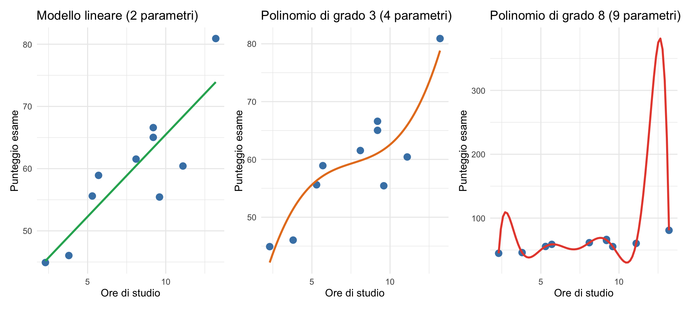
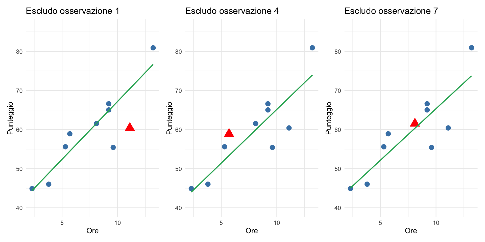

Confronto tra modelli
Come scegliere il modello migliore — un’introduzione
![]()
18 febbraio 2026
Dalla struttura dei dati alla scelta del modello
Nella prima metà di questa lezione abbiamo visto che i dati psicologici hanno una struttura gerarchica e possono essere analizzati con modelli diversi: più semplici o più complessi, con o senza partial pooling.
Ma questo solleva una domanda fondamentale:
Se ho due (o più) modelli, come scelgo il modello migliore?
Perché questa domanda conta per lo psicologo
Nella pratica professionale, la scelta del modello non è un esercizio accademico:
- Uno psicologo clinico deve decidere se il disagio del paziente è spiegato meglio da un modello con un solo predittore (es. depressione) o da uno con più predittori (es. depressione + ansia + contesto sociale).
- Un ricercatore in psicologia dello sviluppo si chiede se il modello multilivello (che tiene conto della classe scolastica) aggiunge davvero potere predittivo rispetto a un modello più semplice.
La risposta dipende da un principio che abbiamo già incontrato nella Lezione 28:
un buon modello è quello che prevede bene nuove osservazioni, non quello che si adatta perfettamente ai dati già visti.
Perché non basta “quello che si adatta meglio”?
L’idea intuitiva sarebbe: il modello migliore è quello che si adatta meglio ai dati.
- Ma c’è un problema. Un modello sufficientemente complicato può adattarsi perfettamente a qualsiasi dato, incluso il rumore casuale.
- Questo fenomeno si chiama sovra-adattamento (overfitting): il modello impara i dettagli accidentali dei dati che ha visto, ma generalizza male a dati nuovi.
Il problema dell’overfitting
Un esempio visivo
Pensiamo a un semplice dataset: il legame tra ore di studio e punteggio a un esame, per 10 studenti.

Cosa sta succedendo?
Il modello lineare (verde) cattura la tendenza generale: più studi, maggiore è il voto.
Il polinomio di grado 3 (arancione) aggiunge alcuni aspetti non lineari, forse è plausibile.
Il polinomio di grado 8 (rosso) passa perfettamente per ogni punto. Si adatta benissimo ai dati osservati… ma farebbe previsioni assurde per un undicesimo studente.
- Il modello più complesso ha il miglior adattamento ma la peggior generalizzazione.
La tensione fondamentale
In ogni analisi statistica c’è una tensione tra due obiettivi:
Adattamento (fit): quanto bene il modello spiega i dati osservati?
Generalizzazione (prediction): quanto bene il modello prevede dati nuovi?
Aggiungere parametri migliora sempre l’adattamento, ma a un certo punto peggiora la generalizzazione.
Il confronto tra modelli cerca di stimare la capacità predittiva: quanto bene il modello funzionerebbe su dati che non ha ancora visto.
È lo stesso principio della distribuzione predittiva a posteriori (Lezioni 22–23) applicato alla scelta tra modelli alternativi.
L’idea chiave: la capacità predittiva
Cosa significa “prevedere bene”?
Dire che un modello “prevede bene” non significa che indovina esattamente ogni valore. Significa qualcosa di più sottile (e più realistico).
Immaginiamo di avere già stimato un modello sui dati osservati. Questo modello non produce una singola previsione, ma una distribuzione di possibili risultati per un nuovo dato \(\tilde{y}\).
La probabilità predittiva
Quando arriva davvero un nuovo dato, il modello si chiede:
Quanto era probabile osservare proprio questo valore, secondo me?
Questa è la probabilità predittiva.
- Un buon modello assegna alta probabilità a ciò che poi accade davvero.
- Un cattivo modello viene “colto di sorpresa” e assegna bassa probabilità al dato osservato.
Quindi valutiamo un modello non chiedendogli “hai indovinato?”, ma “quanto eri sicuro di ciò che è successo?”
La log-densità predittiva
Per ogni nuovo dato \(\tilde{y}_i\), il modello assegna una probabilità:
\[ p(\tilde{y}_i \mid \text{modello, dati osservati}). \]
Questa probabilità è quasi sempre un numero molto piccolo (perché le probabilità continue lo sono). Per questo lavoriamo con il logaritmo della probabilità:
\[ \log \, p(\tilde{y}_i \mid \text{modello}). \]
Perché il logaritmo?
Il logaritmo serve solo a rendere i numeri più gestibili e comparabili. Ma soprattutto ha un’interpretazione molto chiara: misura quanto il modello è “sorpreso” dal dato osservato.
Valori vicini a 0 (es. −0.2, −0.5) → il dato era molto plausibile, il modello se lo aspettava.
Valori molto negativi (es. −10, −15) → il dato era poco plausibile, il modello è rimasto molto sorpreso.
Più il valore è negativo, peggio il modello ha previsto quel dato.
Dall’osservazione singola al modello nel suo insieme
Un singolo dato può andare bene o male per caso.
Per valutare un modello nel complesso, sommiamo la log-densità predittiva su tutti i nuovi dati:
\[ \text{ELPD} = \sum_{i=1}^{n} \log \, p(\tilde{y}_i \mid \text{modello}). \]
Questo numero si chiama Expected Log Predictive Density (ELPD).
Interpretazione dell’ELPD
- L’ELPD misura quanto bene, in media, il modello prevede dati nuovi.
- Più è alto (cioè meno negativo) → migliore capacità predittiva.
- Le differenze di ELPD tra modelli indicano quale modello si sorprende meno dei dati.
In altre parole: il modello migliore è quello che, complessivamente, rimane meno sorpreso dalla realtà.
ELPD e overfitting: il collegamento intuitivo
Un modello può adattarsi molto bene ai dati osservati e tuttavia prevedere male dati nuovi. Questo succede quando il modello è troppo flessibile e inizia a inseguire il rumore nei dati — il fenomeno dell’overfitting.
Perché l’ELPD “punisce” l’overfitting
Un modello caratterizzato dall’overfitting tende a fare previsioni troppo sicure:
- assegna probabilità molto alte a pochi risultati specifici,
- assegna probabilità molto basse a tutto il resto.
Se arriva un nuovo dato leggermente diverso da quelli visti prima:
- il modello viene fortemente sorpreso,
- la log-densità predittiva diventa molto negativa.
Anche pochi dati “inaspettati” possono abbassare drasticamente l’ELPD.
Modelli semplici vs modelli complessi
Modelli troppo semplici → fanno previsioni vaghe → non sono molto sorpresi, ma non sono nemmeno informativi.
Modelli troppo complessi → fanno previsioni molto precise → funzionano solo sui dati già visti.
L’ELPD favorisce i modelli che trovano il giusto equilibrio: abbastanza flessibili da cogliere la struttura dei dati, ma non così rigidi da “rompersi” al primo dato nuovo.
Intuizione finale
Valutare un modello con l’ELPD significa chiedere:
se questo modello fosse la mia teoria sul mondo, quanto spesso rimarrei sorpreso da ciò che osservo?
Il modello migliore non è quello che spiega perfettamente il passato, ma quello che si sorprende meno del futuro.
Il problema pratico
C’è un ostacolo: per calcolare l’ELPD servirebbero dati nuovi che non abbiamo ancora visto.
- Se usiamo gli stessi dati per stimare il modello e per valutarlo, stiamo barando — è come giudicare uno studente con le stesse domande su cui ha studiato.
- Come si risolve? Con la cross-validation (validazione incrociata).
Leave-One-Out Cross-Validation
L’idea della LOO-CV
La Leave-One-Out Cross-Validation (LOO-CV) è una procedura che serve a valutare quanto bene un modello generalizza, cioè quanto bene funzionerebbe su dati che non ha mai visto.
Funziona così:
- Togliamo un’osservazione dal campione.
- Stimiamo il modello usando tutti gli altri dati.
- Chiediamo al modello di prevedere l’osservazione esclusa.
- Ripetiamo questa operazione per ogni osservazione del dataset.
In questo modo, ogni dato viene usato:
- una volta come dato “nuovo” da prevedere,
- tutte le altre volte come dato di addestramento.
Intuizione chiave
Alla fine, otteniamo una stima realistica della capacità predittiva del modello, perché nessuna osservazione viene mai usata sia per stimare il modello sia per valutarlo.
È come testare una teoria chiedendole di spiegare ogni caso come se non lo avesse mai visto prima.
LOO-CV in pratica

Il triangolo rosso è il dato escluso. La retta è stimata senza quel dato. Poi valutiamo quanto bene la retta “prevede” quel punto.
La buona notizia: non serve rifarlo \(n\) volte
In teoria, la Leave-One-Out Cross-Validation richiederebbe di ristimare il modello \(n\) volte, una per ogni osservazione. Per modelli complessi, questo sarebbe computazionalmente molto costoso.
La buona notizia è che, nei modelli bayesiani, esiste un’approssimazione rapida ed efficace chiamata PSIS-LOO (Pareto Smoothed Importance Sampling), implementata nel pacchetto loo di R.
Questa procedura sfrutta il modello stimato una sola volta per ottenere lo stesso risultato concettuale: una stima dell’ELPD per ciascun modello, calcolata in modo che ogni dato venga valutato come se fosse nuovo.
Per ora non è importante capire come funziona l’approssimazione a livello tecnico. La cosa importante è cosa ci restituisce: una stima affidabile della capacità predittiva del modello, senza barare e senza costi computazionali proibitivi.
Confrontare due modelli
Il confronto in pratica
Supponiamo di aver stimato due modelli bayesiani con brms:
mod1: un modello con un solo predittore,mod2: un modello con due predittori.
Vogliamo capire quale dei due prevede meglio dati nuovi.
Il confronto non restituisce un “vincitore” automatico, ma mostra:
- la differenza in ELPD tra i modelli,
- l’incertezza associata a questa differenza.
Come leggere l’output
elpd_diff se_diff
mod2 0.0 0.0
mod1 -4.8 3.1Il modello nella prima riga (
mod2) è quello con ELPD più alto → è il riferimento, quindi haelpd_diff = 0.Per
mod1,elpd_diff = −4.8→ significa chemod1ha una capacità predittiva inferiore rispetto amod2.se_diff = 3.1indica quanto è incerta questa differenza → valori grandi implicano maggiore incertezza nel confronto.
Come interpretare la differenza in ELPD
Una regola pratica utile (Sivula, Magnusson & Vehtari, 2020):
- Se \(|\text{elpd_diff}| < 4\) → i due modelli sono sostanzialmente equivalenti → non c’è evidenza sufficiente per preferirne uno.
- Se \(|\text{elpd_diff}| \geq 4\) → la differenza inizia a essere potenzialmente rilevante → conviene guardare anche il rapporto \[ \frac{\text{elpd_diff}}{\text{se_diff}}. \]
Applicazione all’esempio
Nel nostro caso:
\[ \frac{4.8}{3.1} \approx 1.5. \]
Questo valore suggerisce che:
mod2tende a prevedere meglio dimod1,- ma la differenza è modesta e ancora piuttosto incerta.
Come regola empirica, un rapporto maggiore di 2 indicherebbe una preferenza più solida.
Messaggio chiave
Il confronto tramite LOO non serve a proclamare un vincitore assoluto, ma a valutare quanto siamo sicuri che un modello generalizzi meglio di un altro.
Perché i modelli più semplici possono vincere
Un risultato che spesso sorprende: il modello con meno parametri può avere un ELPD migliore.
Questo accade perché la LOO-CV penalizza automaticamente la complessità: un modello con molti parametri si adatta meglio ai dati di addestramento, ma le sue previsioni per i dati esclusi possono essere peggiori.
Nella LOO-CV bayesiana, la penalizzazione emerge naturalmente dall’approccio — non viene aggiunta a mano come nell’AIC.
Un’analogia: due clinici a confronto
Immaginate due psicologi che devono prevedere come andrà una terapia per un nuovo paziente.
Psicologo A (modello semplice): “Sulla base dell’evidenza, c’è il 70% di probabilità che la CBT funzioni per questo tipo di disturbo.”
Psicologo B (modello complesso): “Considerando tutti i fattori, sono sicuro al 95% che la CBT funzionerà.”
Se la terapia funziona, entrambi avevano previsto correttamente, ma lo psicologo B era molto più sicuro. Se la terapia non funziona, però, lo psicologo B viene penalizzato molto di più: era eccessivamente sicuro di una previsione sbagliata.
Alla lunga, non vince chi fa le previsioni più estreme, ma chi è ben calibrato:
sicuro quando l’evidenza è forte, cauto quando la situazione è ambigua.
L’ELPD misura esattamente questa calibrazione.
Il quadro generale
Quando si confrontano modelli in psicologia?
Il confronto tra modelli è utile ogni volta che abbiamo ipotesi alternative su come spiegare o prevedere i dati.
Un predittore vs. due predittori → l’ansia statistica è predetta meglio dalla sola autovalutazione in matematica oppure migliora includendo anche il tipo di scuola superiore?
Modello con vs. senza effetti gerarchici → tenere conto dell’università di appartenenza migliora la capacità predittiva?
Modelli cognitivi alternativi → un modello di apprendimento con un solo tasso \(\alpha\) oppure con due tassi distinti (ricompense vs. punizioni)?
In tutti questi casi, l’ELPD stimato tramite LOO-CV fornisce un criterio quantitativo, comparabile e fondato sulla previsione.
Cosa l’ELPD non dice
L’ELPD è uno strumento potente, ma non decide da solo.
Interpretabilità — Un modello leggermente peggiore in termini di ELPD, ma molto più semplice e comprensibile, può essere preferibile.
Coerenza teorica — Se una teoria psicologica consolidata prevede un certo effetto, può avere senso mantenerla anche se l’ELPD migliora poco.
Dimensione del campione — Con pochi dati, le differenze di ELPD possono essere troppo incerte per giustificare conclusioni nette.
Il confronto tra modelli è un supporto alla decisione scientifica, non un oracolo che sostituisce il ragionamento teorico.
Come per la scelta tra approccio frequentista e bayesiano (Lezione 28), la decisione finale richiede sempre giudizio professionale (siete dei fisici per i quali le condizioni dell’esperimento sono sempre le stesse? o degli psicologi che si confrontano con enormi variazioni individuali?).
Oltre la selezione: la media tra modelli
Un’alternativa alla selezione del “modello migliore” è la media tra modelli (model averaging o stacking).
L’idea: invece di scegliere un solo modello, combinarli assegnando a ciascuno un peso proporzionale alla sua capacità predittiva.
Questo è coerente con il principio bayesiano (Lezione 17): se siamo incerti su quale modello sia vero, usiamo tutti i modelli, pesati per la loro plausibilità.
Il pacchetto loo di R implementa lo stacking con loo_model_weights().
Applicazione concreta con brms
Riprendiamo i dati:
- 10 studenti;
- ore di studio;
- punteggio all’esame.
Confronteremo due modelli:
- M1: relazione lineare;
- M2: relazione quadratica.
La domanda è:
Il termine quadratico migliora davvero la capacità predittiva?
Stimiamo i modelli con brms
Modello lineare:
Modello quadratico:
Il secondo modello è più flessibile: può catturare un’eventuale curvatura.
Aggiungiamo il criterio LOO
Questo calcola:
- l’ELPD stimato con PSIS-LOO;
- l’effettivo numero di parametri (p_loo);
- le diagnosi di affidabilità.
Confronto tra modelli
Come interpretare il risultato
m1ha ELPD più alto → migliore capacità predittiva.m2haelpd_diff = -2.2,- L’incertezza è
se_diff = 1.0. - Il rapporto (
|elpd_diff| / se_diff = 2.2) è maggiore di 2.
Con questi dati, il termine quadratico non migliora la generalizzazione.
Cosa è successo?
Il modello quadratico:
- si adatta leggermente meglio ai 10 punti,
- ma non migliora la previsione leave-one-out.
Questo è esattamente ciò che ci aspettavamo guardando il grafico:
Un po’ più flessibile, ma non abbastanza da giustificare la complessità.
Diagnostica PSIS
Possiamo controllare la stabilità dell’approssimazione:
Valori di k:
- < 0.5 → ottimo;
- 0.5–0.7 → accettabile;
- \(>\) 0.7 → attenzione;
- \(>\) 1 → LOO non affidabile.
Questo è un vantaggio enorme rispetto ad AIC: abbiamo diagnostica esplicita della validità del criterio.
Collegamento con l’intuizione iniziale
Ricordate il grafico con:
- modello lineare (verde);
- polinomio grado 3 (arancione);
- polinomio grado 8 (rosso).
LOO sta facendo esattamente questo:
“Se tolgo un punto, il modello continua a funzionare?”
Il modello troppo flessibile viene penalizzato perché fa previsioni troppo sicure sui punti esclusi.
Dal grafico intuitivo al criterio quantitativo
Prima abbiamo visto l’overfitting a occhio. Ora lo abbiamo misurato con:
\[ \text{ELPD}_{\text{LOO}} \]
Il principio è sempre lo stesso:
Il modello migliore è quello che si sorprende meno quando incontra dati che non ha ancora visto.
Riepilogo
Le idee da portare a casa
Un buon modello non è quello che si adatta meglio, ma quello che prevede meglio dati nuovi. Adattamento ≠ generalizzazione.
L’ELPD misura la capacità predittiva: quanto bene il modello “si aspetta” dati che non ha visto.
La LOO-CV stima l’ELPD senza bisogno di raccogliere nuovi dati, usando ciascun dato a turno come “test”.
Confrontare modelli con loo_compare(): se la differenza di ELPD è piccola (\(< 4\)), i modelli sono equivalenti; se è grande, il modello con ELPD più alto prevede meglio.
La complessità non è gratis: modelli più complicati rischiano l’overfitting; la LOO-CV ne tiene conto automaticamente.
Per approfondire
Cap. 44 — Entropia e informazione: il fondamento teorico (perché il log-score?)
Cap. 45 — Divergenza di Kullback-Leibler: la distanza tra modello e realtà
Cap. 46 — Valutare i modelli bayesiani: LOO-CV, WAIC, stacking — la trattazione completa
Questi capitoli contengono la formalizzazione matematica (entropia, divergenza KL, importance sampling). La trattazione è impegnativa, ma chi la segue acquisisce una comprensione profonda del perché funziona ciò che abbiamo visto oggi a livello intuitivo.
In chiusura
Questo è l’ultimo argomento nuovo del corso. Nella Lezione 30 faremo un ripasso generale in preparazione alla seconda prova in itinere: un’esercitazione che attraversa tutti i temi, dalla statistica descrittiva al confronto tra modelli.
Ricapitolando il percorso del corso:
- descrivere i dati (EDA, statistica descrittiva)
- ragionare con la probabilità (Bayes, distribuzioni)
- stimare parametri (prior → posterior)
- confrontare modelli (ELPD, LOO-CV) ← oggi
In chiusura
Dall’esplorazione alla decisione: un flusso coerente di ragionamento in condizioni di incertezza.
Questo è il modo di pensare che dovrebbe accompagnarvi nella vostra pratica professionale.